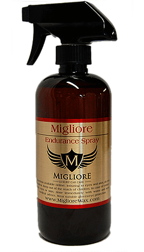

Endurance Spray
Endurance Spray is a supercharged quick detailer. Endurance Spray is more than your average quick detailer as it contains natural oils to truly make your paint pop after usage. Various uses for Endurance Spray include but are not limited to an after wash spritz, in between waxing sessions for added depth, spot and emergency cleaning, and clay bar lubricant. 16 oz.